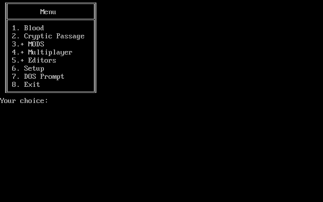
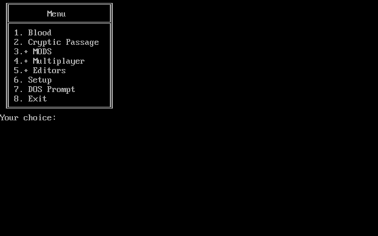

Generator ASCII code
Posted: 30 Oct 2016 10:35
Post here a tool to help in the batch scripts finish
The main function is to generate ASCII box used in menu, there are other functions also.

Who has interrese a look at youtube channel:
https://www.youtube.com/channel/UCCpuZu ... mqUEueXYeg
Download:
https://mega.nz/#F!y9YlWRYK!cuFUQYjjlC-LFbgG4k40GA
http://www.4shared.com/folder/S1GoainE/ ... Batch.html
The main function is to generate ASCII box used in menu, there are other functions also.

Who has interrese a look at youtube channel:
https://www.youtube.com/channel/UCCpuZu ... mqUEueXYeg
Download:
https://mega.nz/#F!y9YlWRYK!cuFUQYjjlC-LFbgG4k40GA
http://www.4shared.com/folder/S1GoainE/ ... Batch.html